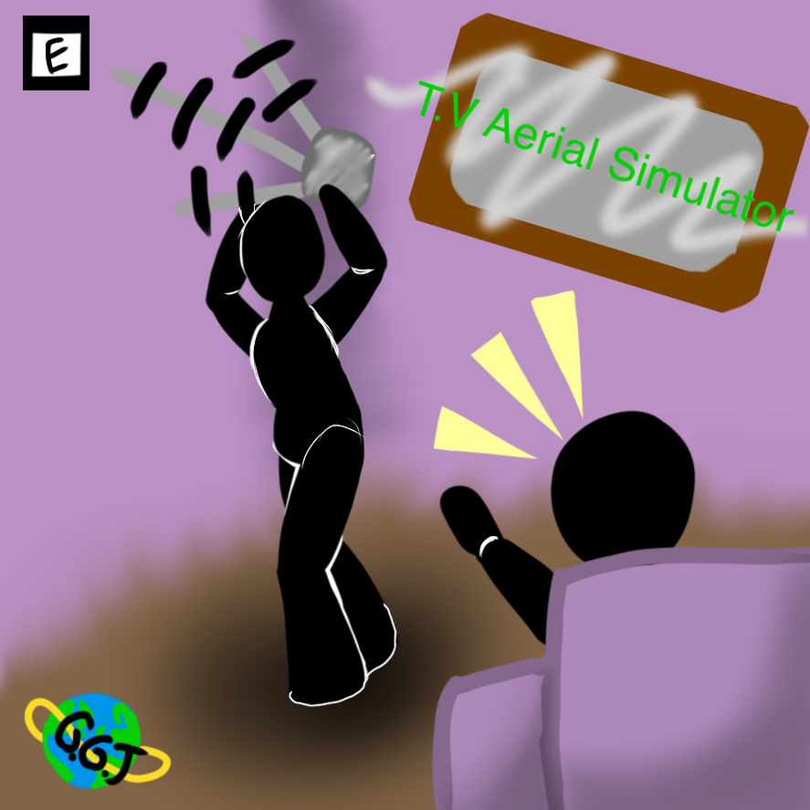

TV Aerial Simulator
TV Aerial Simulator is an asymetrical VR game designed to show young people what watching TV was like in the 1970s.

Creators
Gavin Wood
John Rooksby
Laura Banford
Violeta Tsenova